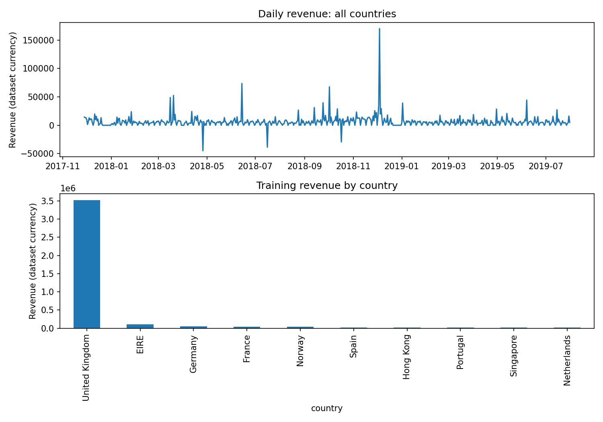
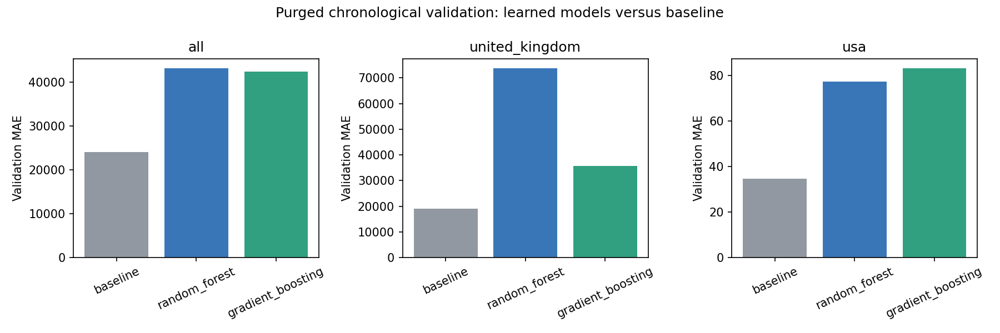
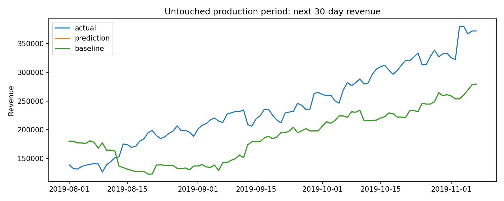

Prepared for peer review — Basim Mohamed
Forecast the total revenue of the next 30 days for a selected country or all countries combined. Revenue planning error is the business metric; MAE, RMSE and WAPE evaluate forecasting performance. Currency is not documented in the provided schema, so values retain dataset units.
Training records: 815,011; dates 2017-11-28 to 2019-07-31, spanning 610 days. United Kingdom has the highest training revenue (3,521,513.50). Daily zero values are filled for absent transaction dates. Negative prices are retained as possible credits; no artificial revenue clipping is applied to targets.

Features use only data strictly before the forecast origin: previous 7, 14, 28 and 70 days of revenue, matching prior-year 30-day revenue, and previous 30-day mean purchase counts and views. We compare a trailing 28-day revenue baseline scaled to 30 days, random forest, and histogram gradient boosting. The first 75% of supervised origins forms the candidate training period; the last 25% is validation. A 30-origin gap purges overlapping target windows. The lowest validation MAE selects a model, including the baseline if it wins. The selected model is then refitted using fully observed training targets.
This deliberately improves the supplied reference's shuffled split: neighboring 30-day targets share observations. Results from that reference are therefore not a fair gold-standard accuracy benchmark. We preserve the business target and feature intent, while using a chronological benchmark. No supplied fitted gold-standard model or prediction file exists in the reference repository.
| country | model | mae | rmse | selected |
|---|---|---|---|---|
| all | baseline | 24047.39 | 28525.35 | baseline |
| all | random_forest | 43210.85 | 49327.77 | baseline |
| all | gradient_boosting | 42345.54 | 49223.40 | baseline |
| united_kingdom | baseline | 18943.97 | 24317.36 | baseline |
| united_kingdom | random_forest | 73845.40 | 87962.08 | baseline |
| united_kingdom | gradient_boosting | 35720.52 | 43506.39 | baseline |
| usa | baseline | 34.78 | 51.70 | baseline |
| usa | random_forest | 77.35 | 88.60 | baseline |
| usa | gradient_boosting | 83.36 | 98.89 | baseline |

| country | origins | selected | mae | rmse | baseline_mae | novelty_rate | revenue_wape | nonoverlap_origins | nonoverlap_wape | mae_alert |
|---|---|---|---|---|---|---|---|---|---|---|
| all | 99 | baseline | 59876.5142 | 64248.0703 | 59876.5142 | 0.4949 | 0.2491 | 4 | 0.2514 | True |
| united_kingdom | 99 | baseline | 54811.4741 | 63633.7154 | 54811.4741 | 0.5051 | 0.2603 | 4 | 0.2811 | True |
| usa | 99 | baseline | 273.0453 | 360.6005 | 273.0453 | 0.3131 | 1.7589 | 4 | 2.0714 | True |

The production JSON files are held out from fitting and selection. Forecasts at later origins use observations available before that origin, with the trained model fixed. A label is evaluated only after all 30 target days are observed. WAPE measures absolute revenue planning error relative to actual revenue; non-overlapping origins are also reported because rolling targets are correlated. Feature-range novelty flags unusual inputs; they are prompts to investigate, not proof of concept drift. The monitoring script flags MAE above 1.5 times validation MAE. This threshold is illustrative and must be calibrated operationally.
Flask exposes POST /train, POST /predict, GET /logfile and GET /health. Predictions include country, date, horizon, baseline, model version and novelty; JSONL logs record request identifiers, timestamp and runtime. Training writes models atomically; a lock prevents concurrent training in the configured single worker. Tests use TemporaryDirectory fixtures for models, synthetic data and logs, avoiding production writes. Dockerfile bundles application, models, data, tests and reports; tests run during image build. Gunicorn uses one worker with four threads.
Only three scopes ship pretrained: all, United Kingdom and USA. The train endpoint supports other countries with sufficient data. Train runs synchronously; for scale, move training to a queue, shared storage, multi-process log collection and external scheduling. No authentication is included: run this educational service locally, not on a public network. Logs and models should be mounted persistently. Re-running analyze.py regenerates the models and report; automatic cadence is not implemented. Increase temporal validation folds, calibrate alert thresholds, compare specialized forecasting approaches, and monitor country-level business impact before operational adoption.